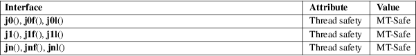

j0, j0f, j0l, j1, j1f, j1l, jn, jnf, jnl − Bessel functions of the first kind
Math library (libm, −lm)
#include <math.h>
double
j0(double x);
double j1(double x);
double jn(int n, double
x);
float
j0f(float x);
float j1f(float x);
float jnf(int n, float
x);
long double
j0l(long double x);
long double j1l(long double x);
long double jnl(int n, long double
x);
Feature Test Macro Requirements for glibc (see feature_test_macros(7)):
j0(),
j1(), jn():
_XOPEN_SOURCE
|| /* Since glibc 2.19: */ _DEFAULT_SOURCE
|| /* glibc <= 2.19: */ _SVID_SOURCE || _BSD_SOURCE
j0f(),
j0l(), j1f(), j1l(), jnf(),
jnl():
_XOPEN_SOURCE >= 600
|| (_ISOC99_SOURCE && _XOPEN_SOURCE)
|| /* Since glibc 2.19: */ _DEFAULT_SOURCE
|| /* glibc <= 2.19: */ _SVID_SOURCE || _BSD_SOURCE
The j0() and j1() functions return Bessel functions of x of the first kind of orders 0 and 1, respectively. The jn() function returns the Bessel function of x of the first kind of order n.
The j0f(), j1f(), and jnf(), functions are versions that take and return float values. The j0l(), j1l(), and jnl() functions are versions that take and return long double values.
On success, these functions return the appropriate Bessel value of the first kind for x.
If x is a NaN, a NaN is returned.
If x is too large in magnitude, or the result underflows, a range error occurs, and the return value is 0.
See math_error(7) for information on how to determine whether an error has occurred when calling these functions.
The following
errors can occur:
Range error: result underflow, or x is too large in
magnitude
errno is set to ERANGE.
These functions do not raise exceptions for fetestexcept(3).
For an explanation of the terms used in this section, see attributes(7).

|
j0() |
||||
|
j1() |
||||
|
jn() |
POSIX.1-2008. |
Others:
BSD.
|
j0() |
||||
|
j1() |
||||
|
jn() |
SVr4, 4.3BSD, POSIX.1-2001, POSIX.1-2008. |
Others:
BSD.
There are errors of up to 2e−16 in the values returned by j0(), j1(), and jn() for values of x between −8 and 8.
y0(3)